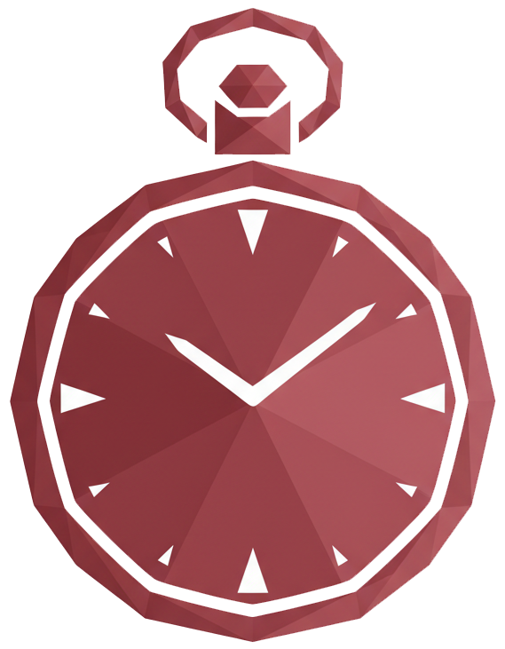
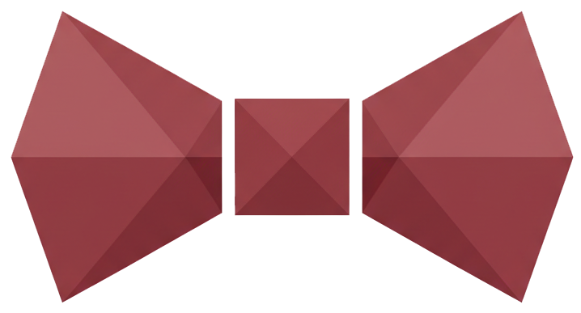
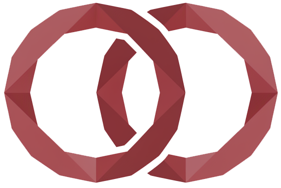
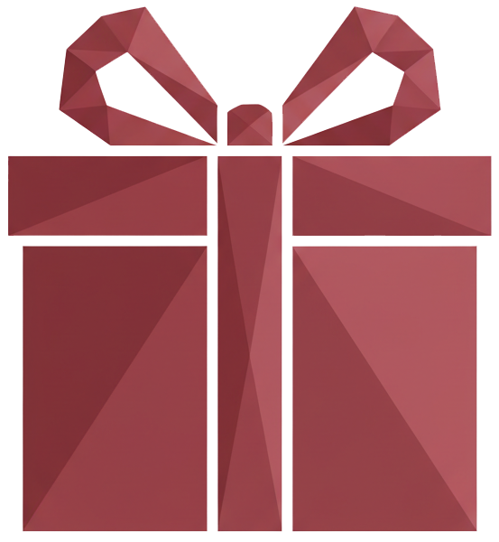

Sevgi Dilleri
Dr. Gary Chapman — 5 Sevgi Dili
WORDS OF AFFIRMATION
Onaylayıcı Sözler
Bu sevgi dilinde olan insanlar iltifatlar, teşvik edici cümleler ve duygusal ifadelerle kendilerini değerli hisseder. "Seni seviyorum", "Seninle gurur duyuyorum" gibi sözler bu kişiler için çok anlamlıdır. Sözler bu sevgi dilinde sevginin en güçlü ifade şeklidir.
Nasıl Gösterilir
Ne İncitir
İlişkide
Bu sevgi dilinde olan kişiler partnerlerinden sözlü onay ve takdir bekler. Güzel sözler, teşvik ve iltifatlar onları mutlu eder. Eleştirel veya kırıcı söylemler derinden yaralar.

QUALITY TIME
Kaliteli Zaman
Bu sevgi dilinde kaliteli zaman, bölünmemiş dikkat ve birlikte geçirilen anlamlı vakit demektir. Bu kişiler için en önemli şey partnerinin gerçekten orada olmasıdır, fiziksel ve zihinsel olarak. Birlikte geçirilen zaman bu sevgi dilinde en çok mutluluk veren şeydir.
Nasıl Gösterilir
Ne İncitir
İlişkide
Bu sevgi dilinde olan kişiler partnerinin onlara vakit ayırmasını, gerçekten birlikte olmasını ister. Meşgul olma bahaneleri veya dikkatsizlik onları çok etkiler.

ACTS OF SERVICE
Hizmet Eylemleri
Bu sevgi dilinde hizmet eylemleri, hayatı kolaylaştırmak için yapılan somut jestlerdir. Bu kişiler partnerinin sorumluluk almasını, yardım etmesini ve eylemle sevgi göstermesini değerli bulur. Eylemler bu sevgi dilinde sözlerden daha güçlü bir sevgi kanıtıdır.
Nasıl Gösterilir
Ne İncitir
İlişkide
Bu sevgi dilinde olan kişiler sözden çok eyleme değer verir. "Seni seviyorum" demek yerine, bulaşıkları yıkamak onlar için çok daha anlamlıdır.

PHYSICAL TOUCH
Fiziksel Temas
Bu sevgi dilinde fiziksel temas sevgiyi ifade etmenin en güçlü yoludur. El ele tutuşmak, sarılmak, omzuna dokunulması, bunların hepsi bu kişileri güvende ve sevilmiş hissettirir. Fiziksel yakınlık bu sevgi dilinde sevginin en önemli göstergesidir.
Nasıl Gösterilir
Ne İncitir
İlişkide
Bu sevgi dilinde olan kişiler fiziksel yakınlığa ihtiyaç duyar. Sarılma, el tutma ve küçük dokunuşlar onlar için sevginin en güçlü kanıtıdır.

GIFTS
Hediyeler
Bu sevgi dilinde hediyeler, düşünceliğin ve sevginin somut bir sembolüdür. Bu kişiler için önemli olan hediyenin fiyatı değil, arkasındaki düşünce ve emektir. "Beni düşünmüş" hissi bu sevgi dilinde paha biçilmezdir. Hediyeler sevgiyi görünür kılar.
Nasıl Gösterilir
Ne İncitir
İlişkide
Bu sevgi dilinde olan kişiler düşünceli jestlere ve sürprizlere değer verir. Hediyenin büyüklüğü değil, "Seni düşünüyorum" mesajı onlar için önemlidir.